Interruptores
Tipos de interruptores
Un interruptor eléctrico es cualquier dispositivo utilizado para interrumpir el flujo de electrones en un circuito. Los interruptores son esencialmente dispositivos binarios: están completamente encendidos ("cerrados") o completamente apagados ("abiertos"). Hay muchos tipos diferentes de interruptores y exploraremos algunos de estos tipos en este capítulo.
Aunque puede parecer extraño cubrir este tema eléctrico elemental en una etapa tan avanzada de esta serie de libros, lo hago porque los capítulos que siguen exploran un ámbito más antiguo de la tecnología digital basado en contactos de interruptores mecánicos en lugar de circuitos de compuerta de estado sólido, y para ello es necesario un conocimiento profundo de los tipos de interruptores. Aprender la función de los circuitos basados en interruptores al mismo tiempo que aprende sobre las puertas lógicas de estado sólido hace que ambos temas sean más fáciles de comprender y prepara el escenario para una experiencia de aprendizaje mejorada en álgebra booleana, las matemáticas detrás de los circuitos lógicos digitales.
El tipo de interruptor más simple es aquel en el que dos conductores eléctricos se ponen en contacto entre sí mediante el movimiento de un mecanismo actuador. Otros interruptores son más complejos y contienen circuitos electrónicos capaces de encenderse o apagarse dependiendo de algún estímulo físico (como luz o campo magnético) detectado. En cualquier caso, la salida final de cualquier interruptor será (al menos) un par de terminales de conexión de cables que estarán conectados entre sí mediante el mecanismo de contacto interno del interruptor ("cerrados") o no conectados entre sí ("abiertos").
Cualquier interruptor diseñado para ser operado por una persona generalmente se denomina interruptor.interruptor de mano, y se fabrican en varias variedades:
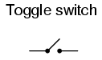
Los interruptores de palanca son accionados por una palanca en ángulo en una de dos o más posiciones. El interruptor de luz común que se utiliza en el cableado doméstico es un ejemplo de interruptor de palanca. La mayoría de los interruptores de palanca se detendrán en cualquiera de las posiciones de su palanca, mientras que otros tienen un mecanismo de resorte interno que devuelve la palanca a una determinada posición.normalposición, permitiendo lo que se llama operación "momentánea".
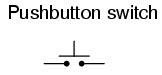
Los interruptores de botón son dispositivos de dos posiciones que se accionan con un botón que se presiona y se suelta. La mayoría de los interruptores de botón tienen un mecanismo de resorte interno que devuelve el botón a su posición "fuera" o "sin presionar" para una operación momentánea. Algunos interruptores de botón se activarán o desactivarán alternativamente con cada pulsación del botón. Otros interruptores de botón permanecerán en su posición "adentro" o "presionado" hasta que se retire el botón. Este último tipo de interruptores de botón suelen tener un botón en forma de seta para facilitar la acción de empujar y tirar.
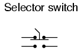
Los interruptores selectores se accionan con un botón giratorio o palanca de algún tipo para seleccionar una de dos o más posiciones. Al igual que el interruptor de palanca, los interruptores selectores pueden descansar en cualquiera de sus posiciones o contener mecanismos de retorno por resorte para una operación momentánea.
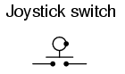
Un interruptor tipo joystick es accionado por una palanca que puede moverse libremente en más de un eje de movimiento. Uno o más de varios mecanismos de contacto del interruptor se activan dependiendo de en qué dirección se empuja la palanca y, a veces, de cómofares empujado. La notación de círculo y punto en el símbolo del interruptor representa la dirección del movimiento de la palanca del joystick necesaria para activar el contacto. Los interruptores manuales con palanca de mando se utilizan habitualmente para el control de grúas y robots.
Algunos interruptores están diseñados específicamente para ser operados por el movimiento de una máquina en lugar de por la mano de un operador humano. Estos interruptores operados por movimiento se llaman comúnmenteinterruptores de límite, porque a menudo se utilizan para limitar el movimiento de una máquina apagando la potencia de accionamiento de un componente si se mueve demasiado. Al igual que con los interruptores manuales, los interruptores de límite vienen en varias variedades:
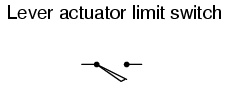
Estos interruptores de límite se parecen mucho a interruptores manuales de palanca o selectores resistentes equipados con una palanca empujada por la parte de la máquina. A menudo, las palancas tienen en la punta un pequeño cojinete de rodillos, lo que evita que la palanca se desgaste por el contacto repetido con la pieza de la máquina.
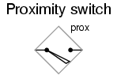
Los interruptores de proximidad detectan la aproximación de una pieza metálica de una máquina mediante un campo magnético o electromagnético de alta frecuencia. Los interruptores de proximidad simples utilizan un imán permanente para accionar un mecanismo de interruptor sellado cada vez que la pieza de la máquina se acerca (normalmente 1 pulgada o menos). Los interruptores de proximidad más complejos funcionan como un detector de metales, energizando una bobina de cable con una corriente de alta frecuencia y monitoreando electrónicamente la magnitud de esa corriente. Si una pieza metálica (no necesariamente magnética) se acerca lo suficiente a la bobina, la corriente aumentará y disparará el circuito de monitoreo. El símbolo que se muestra aquí para el interruptor de proximidad es de variedad electrónica, como lo indica la caja en forma de diamante que rodea el interruptor. Un interruptor de proximidad no electrónico usaría el mismo símbolo que el interruptor de límite accionado por palanca.
Otra forma de interruptor de proximidad es el interruptor óptico, compuesto por una fuente de luz y una fotocélula. La posición de la máquina se detecta mediante la interrupción o el reflejo de un haz de luz. Los interruptores ópticos también son útiles en aplicaciones de seguridad, donde se pueden usar haces de luz para detectar la entrada de personal a un área peligrosa.
En muchos procesos industriales es necesario controlar distintas cantidades físicas con interruptores. Dichos interruptores se pueden usar para hacer sonar alarmas, indicando que una variable de proceso ha excedido los parámetros normales, o se pueden usar para apagar procesos o equipos si esas variables han alcanzado niveles peligrosos o destructivos. Hay muchos tipos diferentes de interruptores de proceso:
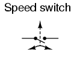
Estos interruptores detectan la velocidad de rotación de un eje mediante un mecanismo de peso centrífugo montado en el eje o mediante algún tipo de detección sin contacto del movimiento del eje, como óptico o magnético.
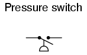
Se puede utilizar presión de gas o líquido para accionar un mecanismo de interruptor si esa presión se aplica a un pistón, diafragma o fuelle, que convierte la presión en fuerza mecánica.
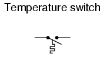
Un mecanismo económico de detección de temperatura es la "tira bimetálica": una tira delgada de dos metales, unidos espalda con espalda, cada metal tiene una tasa diferente de expansión térmica. Cuando la tira se calienta o se enfría, las diferentes tasas de expansión térmica entre los dos metales hacen que se doble. La curvatura de la tira puede usarse entonces para accionar un mecanismo de contacto de interruptor. Otros interruptores de temperatura utilizan una bombilla de latón llena de líquido o gas, con un pequeño tubo que conecta la bombilla a un interruptor sensor de presión. A medida que se calienta el bulbo, el gas o líquido se expande, generando un aumento de presión que luego acciona el mecanismo del interruptor.
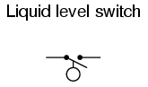
Se puede utilizar un objeto flotante para accionar un mecanismo de interruptor cuando el nivel del líquido en un tanque supera un cierto punto. Si el líquido es conductor de electricidad, el propio líquido se puede utilizar como conductor para tender un puente entre dos sondas metálicas insertadas en el tanque a la profundidad requerida. La técnica de conductividad generalmente se implementa con un diseño especial de relé activado por una pequeña cantidad de corriente a través del líquido conductor. En la mayoría de los casos, no es práctico y peligroso conmutar la corriente de carga total del circuito a través de un líquido.
Los interruptores de nivel también se pueden diseñar para detectar el nivel de materiales sólidos como astillas de madera, granos, carbón o alimento para animales en un silo, contenedor o tolva de almacenamiento. Un diseño común para esta aplicación es una pequeña rueda de paletas, insertada en el contenedor a la altura deseada, que gira lentamente mediante un pequeño motor eléctrico. Cuando el material sólido llena el contenedor hasta esa altura, el material evita que la rueda de paletas gire. La respuesta de torsión del motor pequeño activa el mecanismo del interruptor. Otro diseño utiliza una punta de metal en forma de "diapasón", que se inserta en el contenedor desde el exterior a la altura deseada. La horquilla hace vibrar a su frecuencia resonante mediante un circuito electrónico y un conjunto de bobina de imán/electroimán. Cuando el contenedor se llena hasta esa altura, el material sólido amortigua la vibración de la horquilla, el cambio en la amplitud y/o frecuencia de la vibración detectado por el circuito electrónico.
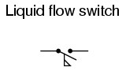
Insertado en una tubería, un interruptor de flujo detectará cualquier caudal de gas o líquido que exceda un cierto umbral, generalmente con una pequeña paleta o paleta que es empujada por el flujo. Otros interruptores de flujo están construidos como interruptores de presión diferencial y miden la caída de presión a través de una restricción integrada en la tubería.
Otro tipo de interruptor de nivel, adecuado para la detección de materiales líquidos o sólidos, es el interruptor nuclear. Compuestos por un material fuente radiactivo y un detector de radiación, los dos están montados a lo largo del diámetro de un recipiente de almacenamiento para material sólido o líquido. Cualquier altura de material más allá del nivel de la disposición fuente/detector atenuará la intensidad de la radiación que llega al detector. Esta disminución de la radiación en el detector se puede utilizar para activar un mecanismo de relé que proporcione un contacto de interruptor para medición, punto de alarma o incluso control del nivel del recipiente.
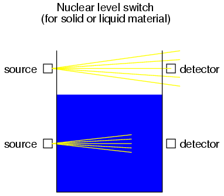
Tanto la fuente como el detector están fuera del recipiente, sin ninguna intrusión excepto el propio flujo de radiación. Las fuentes radiactivas utilizadas son bastante débiles y no representan una amenaza inmediata para la salud del personal de operaciones o mantenimiento.
Como es habitual, suele haber más de una forma de implementar un interruptor para monitorear un proceso físico o servir como control del operador. Por lo general, no existe un único interruptor "perfecto" para ninguna aplicación, aunque obviamente algunos presentan ciertas ventajas sobre otros. Los interruptores deben adaptarse inteligentemente a la tarea para lograr un funcionamiento eficiente y confiable.
- REVISAR:
- A cambiarEs un dispositivo eléctrico, generalmente electromecánico, que se utiliza para controlar la continuidad entre dos puntos.
- ManoLos interruptores son accionados por el tacto humano.
- LímiteLos interruptores son accionados por el movimiento de la máquina.
- ProcesoLos interruptores son accionados por cambios en algún proceso físico (temperatura, nivel, flujo, etc.).
Diseño de contactos de interruptores
Se puede construir un interruptor con cualquier mecanismo que ponga en contacto dos conductores entre sí de manera controlada. Esto puede ser tan simple como permitir que dos cables de cobre se toquen entre sí mediante el movimiento de una palanca o empujando directamente dos tiras de metal para que entren en contacto. Sin embargo, un buen diseño de interruptor debe ser resistente y confiable, y evitar presentar al operador la posibilidad de sufrir una descarga eléctrica. Por lo tanto, los diseños de interruptores industriales rara vez son tan toscos.
Las partes conductoras de un interruptor que se utilizan para hacer y deshacer la conexión eléctrica se llamancontactos. Los contactos suelen estar hechos de plata o aleación de plata y cadmio, cuyas propiedades conductoras no se ven comprometidas significativamente por la corrosión u oxidación de la superficie. Los contactos de oro exhiben la mejor resistencia a la corrosión, pero tienen una capacidad de transporte de corriente limitada y pueden "soldarse en frío" si se unen con una gran fuerza mecánica. Cualquiera que sea la elección del metal, los contactos del interruptor están guiados por un mecanismo que garantiza un contacto cuadrado y uniforme, para una máxima confiabilidad y una mínima resistencia.
Se pueden construir contactos como estos para manejar cantidades extremadamente grandes de corriente eléctrica, hasta miles de amperios en algunos casos. Los factores limitantes para la ampacidad del contacto del interruptor son los siguientes:
- Calor generado por la corriente a través de contactos metálicos (cuando están cerrados).
- Chispas causadas cuando los contactos se abren o cierran.
- El voltaje a través de los contactos del interruptor abiertos (potencial de corriente que salta a través del espacio).
Una desventaja importante de los contactos de interruptor estándar es la exposición de los contactos a la atmósfera circundante. En un ambiente agradable y limpio de sala de control, esto generalmente no es un problema. Sin embargo, la mayoría de los entornos industriales no son tan benignos. La presencia de productos químicos corrosivos en el aire puede provocar que los contactos se deterioren y fallen prematuramente. Aún más problemática es la posibilidad de que se produzcan chispas por contacto regular que provoquen la ignición de productos químicos inflamables o explosivos.
Cuando existen tales preocupaciones ambientales, se pueden considerar otros tipos de contactos para interruptores pequeños. Estos otros tipos de contactos están sellados contra el contacto con el aire exterior y, por lo tanto, no sufren los mismos problemas de exposición que los contactos estándar.
Un tipo común de interruptor de contacto sellado es el interruptor de mercurio. El mercurio es un elemento metálico, líquido a temperatura ambiente. Al ser un metal, posee excelentes propiedades conductoras. Al ser un líquido, se puede poner en contacto con sondas metálicas (para cerrar un circuito) dentro de una cámara sellada simplemente inclinando la cámara para que las sondas queden en el fondo. Muchos interruptores industriales utilizan pequeños tubos de vidrio que contienen mercurio que se inclinan en un sentido para cerrar el contacto y en otro sentido para abrirlo. Aparte de los problemas de rotura de tubos y derrames de mercurio (que es un material tóxico) y la susceptibilidad a las vibraciones, estos dispositivos son una excelente alternativa a los contactos de interruptor al aire libre siempre que los problemas de exposición ambiental sean una preocupación.
Aquí, un interruptor de mercurio (a menudo llamadoinclinacióninterruptor) se muestra en la posición abierta, donde el mercurio está fuera de contacto con los dos contactos metálicos en el otro extremo de la bombilla de vidrio:
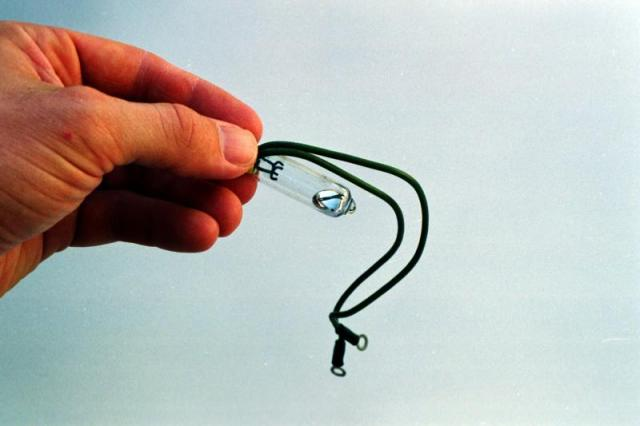
Aquí, el mismo interruptor se muestra en la posición cerrada. La gravedad ahora mantiene el mercurio líquido en contacto con los dos contactos metálicos, proporcionando continuidad eléctrica de uno al otro:
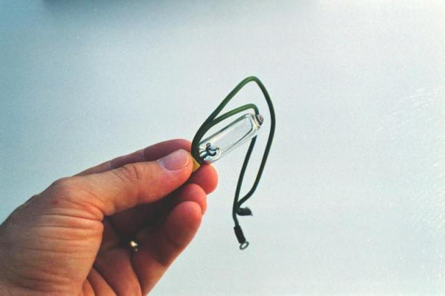
Los contactos de interruptor de mercurio no son prácticos para construir en tamaños grandes, por lo que normalmente encontrará dichos contactos con una capacidad nominal de no más de unos pocos amperios y no más de 120 voltios. Por supuesto, hay excepciones, pero estos son límites comunes.
Otro tipo de interruptor de contacto sellado es el interruptor de láminas magnético. Al igual que el interruptor de mercurio, los contactos de un interruptor de láminas están ubicados dentro de un tubo sellado. A diferencia del interruptor de mercurio que utiliza metal líquido como medio de contacto, el interruptor de láminas es simplemente un par de tiras metálicas magnéticas muy delgadas (de ahí el nombre "lengüeta") que se ponen en contacto entre sí aplicando un fuerte campo magnético fuera del tubo sellado. La fuente del campo magnético en este tipo de interruptor suele ser un imán permanente, que el mecanismo de accionamiento acerca o aleja del tubo. Debido al pequeño tamaño de las lengüetas, este tipo de contacto suele tener corrientes y voltajes más bajos que el interruptor de mercurio promedio. Sin embargo, los interruptores de láminas suelen manejar mejor la vibración que los contactos de mercurio, porque no hay líquido dentro del tubo que pueda salpicar.
Es común encontrar que el voltaje y las corrientes nominales de contacto del interruptor de uso general sean mayores en cualquier interruptor o relé si la energía eléctrica que se conmuta es CA en lugar de CC. La razón de esto es la tendencia a autoextinguirse de un arco de corriente alterna a través de un entrehierro. Debido a que la corriente de la línea eléctrica de 60 Hz en realidad se detiene e invierte la dirección 120 veces por segundo, existen muchas oportunidades para que el aire ionizado de un arco pierda suficiente temperatura para dejar de conducir corriente, hasta el punto en que el arco no se reiniciará en el siguiente pico de voltaje. La CC, por otro lado, es un flujo continuo e ininterrumpido de electrones que tiende a mantener mucho mejor un arco a través de un espacio de aire. Por lo tanto, los contactos de interruptor de cualquier tipo sufren más desgaste al conmutar un valor dado de corriente continua que con el mismo valor de corriente alterna. El problema de la conmutación de CC es exagerado cuando la carga tiene una cantidad significativa de inductancia, ya que se generarán voltajes muy altos a través de los contactos del interruptor cuando se abre el circuito (el inductor hace todo lo posible para mantener la corriente del circuito en la misma magnitud que cuando el interruptor estaba cerrado).
Tanto con CA como con CC, la formación de arcos en los contactos se puede minimizar agregando un circuito "amortiguador" (un capacitor y una resistencia conectados en serie) en paralelo con el contacto, como este:
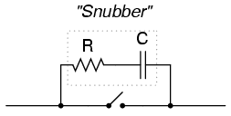
Un aumento repentino de voltaje a través del contacto del interruptor causado por la apertura del contacto será atenuado por la acción de carga del capacitor (el capacitor se opone al aumento de voltaje al consumir corriente). La resistencia limita la cantidad de corriente que el condensador descargará a través del contacto cuando se cierre nuevamente. Si la resistencia no estuviera allí, el capacitor podría hacer que el arco durante el cierre del contacto sea peor que el arco durante la apertura del contacto sin un capacitor. Si bien esta adición al circuito ayuda a mitigar el arco de contacto, no está exenta de desventajas: una consideración primordial es la posibilidad de que una combinación de condensador/resistencia fallida (en cortocircuito) proporcione un camino para que los electrones fluyan a través del circuito en todo momento, incluso cuando el contacto está abierto y no se desea corriente. El riesgo de esta falla y la gravedad de las consecuencias resultantes deben considerarse frente al mayor desgaste de los contactos (y la inevitable falla de los contactos) sin el circuito amortiguador.
El uso de amortiguadores en circuitos de interruptores de CC no es nada nuevo: los fabricantes de automóviles han estado haciendo esto durante años en los sistemas de encendido de motores, minimizando la formación de arcos en los "puntos" de contacto del interruptor en el distribuidor con un pequeño condensador llamadocondensador. Como te puede decir cualquier mecánico, la vida útil de los "puntos" del distribuidor está directamente relacionada con el buen funcionamiento del condensador.
Con toda esta discusión sobre la reducción del arco eléctrico en los contactos del interruptor, uno podría pensar que menos corriente siempre es mejor para un interruptor mecánico. Sin embargo, esto no es necesariamente así. Se ha descubierto que una pequeña cantidad de arcos periódicos puede ser realmente buena para los contactos del interruptor, porque mantiene las caras de los contactos libres de pequeñas cantidades de suciedad y corrosión. Si un contacto de interruptor mecánico se opera con muy poca corriente, los contactos tenderán a acumular una resistencia excesiva y pueden fallar prematuramente. Esta cantidad mínima de corriente eléctrica necesaria para mantener en buen estado el contacto de un interruptor mecánico se denominacorriente de humectación.
Normalmente, la clasificación de corriente de mojado de un interruptor está muy por debajo de su clasificación de corriente máxima y muy por debajo de su carga de corriente operativa normal en un sistema diseñado adecuadamente. Sin embargo, hay aplicaciones en las que puede ser necesario un contacto de interruptor mecánico para manejar rutinariamente corrientes por debajo de los límites de corriente de humectación normales (por ejemplo, si un interruptor selector mecánico necesita abrir o cerrar un circuito electrónico analógico o lógico digital donde el valor de corriente es extremadamente pequeño). En estas aplicaciones, se recomienda encarecidamente especificar contactos de interruptor chapados en oro. El oro es un metal "noble" y no se corroe como lo hacen otros metales. Como resultado, tales contactos tienen requisitos de corriente de humectación extremadamente bajos. ¡Los contactos normales de aleación de plata o cobre no proporcionarán un funcionamiento confiable si se usan en un servicio de corriente tan baja!
- REVISAR:
- Las partes de un interruptor responsables de establecer y romper la continuidad eléctrica se denominan "contactos". Generalmente hechos de una aleación de metal resistente a la corrosión, los contactos se tocan entre sí mediante un mecanismo que ayuda a mantener la alineación y el espaciado adecuados.
- Los interruptores de mercurio utilizan una porción de mercurio metálico líquido como contacto móvil. Sellado en un tubo de vidrio, la chispa del contacto de mercurio está sellada del ambiente exterior, lo que hace que este tipo de interruptor sea ideal para atmósferas que potencialmente albergan vapores explosivos.
- Los interruptores de láminas son otro tipo de dispositivo de contacto sellado, en el que el contacto se realiza mediante dos delgadas "lengüetas" de metal dentro de un tubo de vidrio, unidas por la influencia de un campo magnético externo.
- Los contactos del interruptor sufren una mayor presión al cambiar CC que CA. Esto se debe principalmente a la naturaleza autoextinguible de un arco de CA.
- Se puede conectar una red de resistencia-condensador llamada "amortiguador" en paralelo con un contacto de interruptor para reducir la formación de arcos en los contactos.
- corriente de humedecimientoes la cantidad mínima de corriente eléctrica necesaria que debe transportar un contacto de interruptor para que sea autolimpiante. Normalmente este valor está muy por debajo de la corriente nominal máxima del interruptor.
Estado "normal" del contacto y secuencia de apertura/cierre
Se puede diseñar cualquier tipo de contacto de interruptor de modo que los contactos se "cierren" (establezcan continuidad) cuando se accionen, o se "abran" (interrumpan la continuidad) cuando se accionen. Para los interruptores que tienen un mecanismo de retorno por resorte, la dirección a la que regresa el resorte sin aplicar fuerza se llamanormalposición. Por lo tanto, los contactos que están abiertos en esta posición se llamannormalmente abiertoy los contactos que están cerrados en esta posición se llamannormalmente cerrado.
Para los interruptores de proceso, la posición o estado normal es aquella en la que se encuentra el interruptor cuando no hay influencia del proceso sobre él. Una manera fácil de determinar la condición normal de un interruptor de proceso es considerar el estado del interruptor mientras se encuentra en un estante de almacenamiento, desinstalado. A continuación se muestran algunos ejemplos de condiciones de cambio de proceso "normales":
- interruptor de velocidad: El eje no gira
- interruptor de presión: Presión aplicada cero
- interruptor de temperatura: Temperatura ambiente (ambiente)
- interruptor de nivel: Tanque o contenedor vacío
- interruptor de flujo: Flujo de líquido cero
Es importante diferenciar entre la condición "normal" de un interruptor y su uso "normal" en un proceso operativo. Considere el ejemplo de un interruptor de flujo de líquido que sirve como alarma de flujo bajo en un sistema de agua de refrigeración. La condición normal, o de funcionamiento adecuado, del sistema de agua de refrigeración es que haya un flujo de refrigerante bastante constante a través de esta tubería. Si queremos que el contacto del interruptor de flujocercaEn caso de pérdida de flujo de refrigerante (para completar un circuito eléctrico que activa una sirena de alarma, por ejemplo), nos gustaría utilizar un interruptor de flujo connormalmente cerradoen lugar de contactos normalmente abiertos. Cuando hay un flujo adecuado a través de la tubería, los contactos del interruptor se abren a la fuerza; cuando el caudal cae a un nivel anormalmente bajo, los contactos vuelven a su estado normal (cerrado). Esto resulta confuso si piensa que "normal" es el estado normal del proceso, así que asegúrese de pensar siempre en el estado "normal" de un interruptor como aquel que se encuentra en un estante.
La simbología esquemática de los interruptores varía según el propósito y la actuación del interruptor. Un contacto de interruptor normalmente abierto se dibuja de tal manera que indique una conexión abierta, lista para cerrarse cuando se acciona. Por el contrario, un interruptor normalmente cerrado se dibuja como una conexión cerrada que se abrirá cuando se accione. Tenga en cuenta los siguientes símbolos:
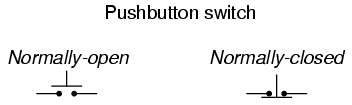
También existe una simbología genérica para cualquier contacto de interruptor, que utiliza un par de líneas verticales para representar los puntos de contacto en un interruptor. Los contactos normalmente abiertos se designan con líneas que no se tocan, mientras que los contactos normalmente cerrados se designan con una línea diagonal que une las dos líneas. Compara los dos:
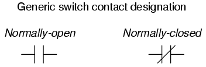
El interruptor de la izquierda se cerrará cuando se accione y se abrirá mientras esté en la posición "normal" (no accionado). El interruptor de la derecha se abrirá cuando se accione y se cerrará en la posición "normal" (no accionado). Si los interruptores se designan con estos símbolos genéricos, el tipo de interruptor generalmente se indicará en el texto inmediatamente al lado del símbolo. Tenga en cuenta que el símbolo de la izquierda esnotconfundirse con el de un condensador. Si es necesario representar un capacitor en un esquema lógico de control, se mostrará así:
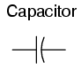
En la simbología electrónica estándar, la figura que se muestra arriba está reservada para condensadores sensibles a la polaridad. En la simbología de la lógica de control, este símbolo de condensador se utiliza paraanytipo de condensador, incluso cuando el condensador no es sensible a la polaridad, para distinguirlo claramente de un contacto de interruptor normalmente abierto.
Con los interruptores selectores de posiciones múltiples, se debe considerar otro factor de diseño: es decir, la secuencia de romper conexiones antiguas y hacer conexiones nuevas a medida que el interruptor se mueve de una posición a otra, el contacto móvil toca varios contactos estacionarios en secuencia.
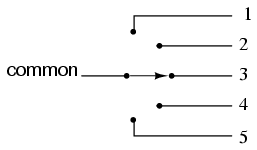
El interruptor selector que se muestra arriba cambia una palanca de contacto común a una de cinco posiciones diferentes, para hacer contacto con los cables numerados del 1 al 5. La configuración más común de un interruptor de posiciones múltiples como este es aquella en la que el contacto con una posición está roto.antesse realiza el contacto con la siguiente posición. Esta configuración se llamaromper antes de hacer. Para dar un ejemplo, si el interruptor estuviera colocado en la posición número 3 y se girara lentamente en el sentido de las agujas del reloj, la palanca de contacto se movería fuera de la posición número 3, abriendo ese circuito, se movería a una posición entre el número 3 y el número 4 (ambas rutas del circuito se abrirían) y luego tocaría la posición número 4, cerrando ese circuito.
Hay aplicaciones en las que es inaceptable abrir completamente el circuito conectado al cable "común" en cualquier momento. Para tal aplicación, unhacer antes de romperSe puede construir un diseño de interruptor en el que la palanca de contacto móvil en realidad hace un puente entre dos posiciones de contacto (entre el número 3 y el número 4, en el escenario anterior) a medida que viaja entre posiciones. El compromiso aquí es que el circuito debe poder tolerar cierres de interruptor entre contactos de posición adyacentes (1 y 2, 2 y 3, 3 y 4, 4 y 5) a medida que se gira la perilla selectora de una posición a otra. Un interruptor de este tipo se muestra aquí:
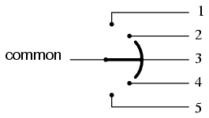
Cuando los contactos móviles se pueden llevar a una de varias posiciones con contactos estacionarios, esas posiciones a veces se denominanlanza. El número de contactos móviles a veces se denominapolos. Los dos interruptores selectores que se muestran arriba con un contacto móvil y cinco contactos estacionarios se designarían como interruptores "unipolares de cinco posiciones".
Si dos interruptores unipolares idénticos de cinco posiciones se unieran mecánicamente para que fueran accionados por el mismo mecanismo, todo el conjunto se llamaría interruptor "bipolar de cinco posiciones":
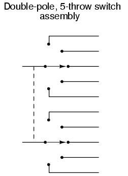
A continuación se muestran algunas configuraciones de conmutadores comunes y sus designaciones abreviadas:
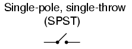
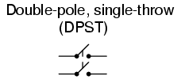
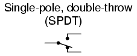
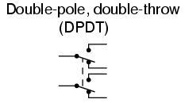
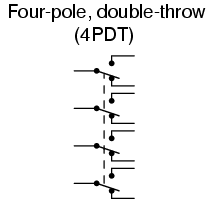
- REVISAR:
- The normalEl estado de un interruptor es aquel en el que no está accionado. Para los interruptores de proceso, esta es la condición en la que se encuentran cuando se encuentran en un estante, desinstalados.
- Un interruptor que está abierto cuando no está accionado se llamanormalmente abierto. Un interruptor que se cierra cuando no está accionado se llamanormalmente cerrado. A veces, los términos "normalmente abierto" y "normalmente cerrado" se abrevian N.O. y Carolina del Norte, respectivamente.
- La simbología genérica de N.O. y contactos del interruptor N.C. es el siguiente:
-
- Los interruptores multiposición pueden ser de apertura antes de apertura (el más común) o de apertura antes de apertura.
- Los "polos" de un interruptor se refieren a la cantidad de contactos móviles, mientras que los "tiros" de un interruptor se refieren a la cantidad de contactos estacionarios por contacto móvil.
Contact "bounce"
Cuando se acciona un interruptor y los contactos se tocan entre sí bajo la fuerza de la actuación, se supone que establecen continuidad en un momento único y nítido. Desafortunadamente, los interruptores no logran exactamente este objetivo. Debido a la masa del contacto móvil y a cualquier elasticidad inherente al mecanismo y/o los materiales de contacto, los contactos "rebotarán" al cerrarse durante un período de milisegundos antes de detenerse por completo y proporcionar un contacto ininterrumpido. En muchas aplicaciones, el rebote del interruptor no tiene importancia: importa poco si un interruptor que controla una lámpara incandescente "rebota" durante algunos ciclos cada vez que se acciona. Dado que el tiempo de calentamiento de la lámpara excede con creces el período de rebote, no se producirá ninguna irregularidad en el funcionamiento de la lámpara.
Sin embargo, si el interruptor se utiliza para enviar una señal a un amplificador electrónico o algún otro circuito con un tiempo de respuesta rápido, el rebote del contacto puede producir efectos muy notorios y no deseados:
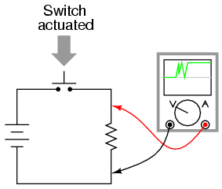
Una mirada más cercana a la pantalla del osciloscopio revela un conjunto bastante feo de conexiones y cortes cuando el interruptor se acciona una sola vez:
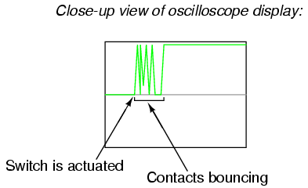
Si, por ejemplo, este interruptor se utiliza para proporcionar una señal de "reloj" a un circuito contador digital, de modo que se supone que cada accionamiento del interruptor de botón incrementa el contador en un valor de 1, lo que sucederá en cambio es que el contador se incrementará en varios conteos cada vez que se accione el interruptor. Dado que los interruptores mecánicos a menudo interactúan con circuitos electrónicos digitales en los sistemas modernos, el rebote de los contactos del interruptor es una consideración de diseño frecuente. De alguna manera, se debe eliminar el "castañeteo" producido por los contactos que rebotan para que el circuito receptor vea una transición de encendido/apagado limpia y nítida:
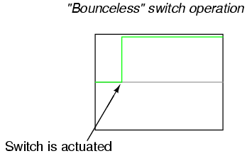
Los contactos del interruptor pueden serrebotadovarias maneras diferentes. El medio más directo es abordar el problema en su origen: el propio interruptor. A continuación se ofrecen algunas sugerencias para diseñar mecanismos de conmutación para un rebote mínimo:
- Reducir la energía cinética del contacto en movimiento. Esto reducirá la fuerza del impacto cuando se detenga sobre el contacto estacionario, minimizando así el rebote.
- Utilice "resortes amortiguadores" en los contactos estacionarios para que puedan retroceder libremente y absorber suavemente la fuerza del impacto del contacto en movimiento.
- Diseñe el interruptor para que tenga un contacto "deslizante" o "limpiante" en lugar de un impacto directo. Los diseños de interruptores de "cuchillo" utilizan contactos deslizantes.
- Humedezca el movimiento del mecanismo del interruptor utilizando un mecanismo de "amortiguador" de aire o aceite.
- Utilice conjuntos de contactos en paralelo entre sí, cada uno ligeramente diferente en masa o espacio de contacto, de modo que cuando uno rebote en el contacto estacionario, al menos uno de los otros todavía esté en contacto firme.
- "Moje" los contactos con mercurio líquido en un ambiente sellado. Después de realizar el contacto inicial, la tensión superficial del mercurio mantendrá la continuidad del circuito incluso aunque el contacto móvil pueda rebotar varias veces en el contacto estacionario.
Cada una de estas sugerencias sacrifica algún aspecto del rendimiento del interruptor para lograr un rebote limitado, por lo que no es práctico diseñarallinterruptores teniendo en cuenta el rebote de contacto limitado. Las modificaciones realizadas para reducir la energía cinética del contacto pueden dar como resultado una pequeña brecha de contacto abierto o un contacto de movimiento lento, lo que limita la cantidad de voltaje que el interruptor puede manejar y la cantidad de corriente que puede interrumpir. Los contactos deslizantes, aunque no rebotan, aún producen "ruido" (corriente irregular causada por una resistencia de contacto irregular al moverse) y sufren más desgaste mecánico que los contactos normales.
Múltiples contactos paralelos dan menos rebote, pero sólo a mayor complejidad y costo del interruptor. Usar mercurio para "mojar" los contactos es un medio muy eficaz para mitigar el rebote, pero lamentablemente se limita a cambiar contactos de baja ampacidad. Además, los contactos humedecidos con mercurio generalmente tienen una posición de montaje limitada, ya que la gravedad puede hacer que los contactos se "puenteen" accidentalmente si se orientan en la dirección incorrecta.
Si rediseñar el mecanismo del interruptor no es una opción, los contactos del interruptor mecánico se pueden eliminar externamente, utilizando otros componentes del circuito para acondicionar la señal. Un circuito de filtro de paso bajo conectado a la salida del interruptor, por ejemplo, reducirá las fluctuaciones de voltaje/corriente generadas por el rebote de los contactos:
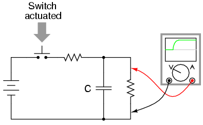
Los contactos del interruptor se pueden eliminar electrónicamente, utilizando circuitos de transistores histeréticos (circuitos que se "bloquean" en un estado alto o bajo) con retardos de tiempo incorporados (llamados circuitos "de un solo disparo") o dos entradas controladas por un interruptor de doble tiro. Estos circuitos histeréticos, llamadosmultivibradores, se analizan en detalle en un capítulo posterior.
Lecciones en circuitos eléctricoscopyright (C) 2000-2023 Tony R. Kuphaldt, según los términos y condiciones delCC BY License.